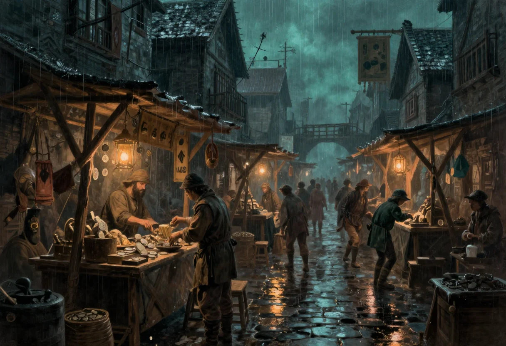

Un voleur vit de ce qu'il vole, mais il mange, il dort, il s'habille, il paie ses informateurs et il paie ses lames. La question des prix n'est donc pas un détail comptable : c'est ce qui décide si un coup vaut le risque, si une rançon permet de tenir trois mois ou trois jours, et si le receleur du coin peut se permettre de vous trahir.
La première question que je me suis posée en reprenant mes repères de valeur est la plus bête de toutes : a-t-on vraiment besoin de garder les pièces de bronze, en plus de celles d'argent et d'or ? Les repères que j'avais pris n'étaient pas exactement bien pensés, proportionnellement. Un œuf valait trois quarts de pièce de bronze. Un repas dans une auberge modeste valait deux cinquièmes de pièce d'argent. Le salaire journalier moyen d'un milicien, dans un quartier modeste de petite bourgeoisie et de commerçants, valait une pièce d'or. À peu près.
Trois échelons pour trois monnaies, c'est pratique à la table et faux à l'usage : le bronze ne sert qu'à l'appoint, l'argent paie le quotidien, l'or n'apparaît presque jamais dans les mains d'un joueur. Autant le dire tout de suite, un personnage de Nightprowler compte en pièces d'argent et en dettes. La pièce d'or, il la voit de loin, et c'est très bien ainsi.
Un barème fixe ne tient pas longtemps. Il faut échelonner les prix en fonction de la rareté des matières premières, de la qualité de la conception ou du service, et de la quantité de demandes. À cela s'ajoutent des modificateurs d'affinité entre le client et le vendeur, de localisation, et même d'heure : on voit mal un boulanger être réveillé pour une miche de pain de seigle à minuit, ou pour une baguette de pain, sauf excellentes relations et grasse rémunération.
C'est cette dernière ligne qui compte le plus en jeu. Un prix n'est pas un nombre, c'est une négociation avec un lieu, une heure et un visage. Le même flacon de poison coûte trois fois plus cher à un inconnu pressé qu'à un habitué qui sait attendre le bon jour du marché. Et le vendeur qui vous fait crédit est un homme qui vous tient.
Un classement intéressant de la vente des objets et des services serait un classement par type d'échoppe ou de service. C'est ce que j'ai fini par faire, en rangeant l'inventaire dans l'ordre approximatif, très approximatif, des boutiques que les joueurs visitent réellement, quel que soit le rang du quartier, pauvre, modeste ou riche, et que ce soit dans la légalité ou non.
Toutes ces boutiques sont plus ou moins rares et plus ou moins officielles, et elles n'existent pas forcément à la surface. Les gouris sont quand même un tantinet civilisés, et puisqu'ils ne sont pas les bienvenus en haut, autant construire leur petit chez-soi sous terre. Un voleur qui travaille les égouts finit par connaître deux villes : celle qui paie patente et celle qui n'en paie pas.
| Besoin | Où l'on va |
|---|---|
| Manger, boire, dormir | auberge, de préférence avec chambres sûres, animation musicale, organisation de combats et de paris, jeux divers et présence de belles courtisanes ; troquet ; salons de thé ; clubs de discussion ; boulangerie ; laiterie ; épicerie ; charcutier ; poissonnier ; traiteur ; confiseur ; viticulteur et marchand de vin ; fruits et légumes, dont j'avoue que je ne sais toujours pas ce que sont vraiment les produits maraîchers. |
| S'équiper | armurerie ; bazar ; droguerie pour les tabacs, poisons et drogues ; herboristerie ; orfèvrerie et bijouterie ; draperie ; cordonnier ; couture et vente de vêtements et de costumes divers ; poterie ; papeterie, relieur et scribes ; librairie et bibliothèque ; animalerie. |
| Bouger, expédier | relais de courrier pour la livraison d'un message ou d'une missive et la location d'un cheval ; écurie pour la location ou l'achat ; carrosse et calèche, qui ne sont pas vraiment des boutiques mais proposent des services plutôt nomades ; armateurs, navires, bateleurs et boucaniers ; entrepôts de marchandises. |
| Soigner, distraire | docteurs, médecins et maisons de soin ; temple et église ; maisons closes, prostitution et alcools forts ; théâtre ; cirque ; arène. |
| Fabriquer, réparer | serruriers ; ateliers de bricolage de tous genres, pour un objet sur demande et description précise ; décorateur ; produits chimiques ; horticulteur et botaniste ; femme de ménage. |
| Savoir, prédire, montrer | écoles ; université de magie ; devins et chiromanciens ; marchands d'objets d'art et artistes, sculpteurs, peintres, poètes, jongleurs et dresseurs ; musiciens et marchands d'instruments de musique. Et, pour la curiosité de l'inventaire, un guêpier, ce qui laisse rêveur sur ce qu'on y vendait. |
| Tenir l'ordre | caserne et poste de garde ; prison. Ce ne sont pas des boutiques, ce sont les clients les plus réguliers de tout ce qui précède. |
| Le marché des ombres | magasin d'objets magiques, dont il ne doit pas exister d'officiel, surtout pas, car ce serait le moteur du bourrinisme ; particuliers et guildes d'assassins, de gardes du corps, d'informateurs et d'espions, de contrebande, de voleurs, de brutes et de magiciens ; marché d'esclaves, dont je parlerai ailleurs, parce qu'il mérite son chapitre. |
Une telle liste mélange le légal et l'illégal dans la même colonne, et c'est précisément ce qui la rend utile : un personnage fréquente les deux avec la même monnaie, souvent dans la même rue, parfois dans la même arrière-salle. Le temple est à trois portes de la maison close, le scribe public travaille pour le préfet et falsifie des papiers le soir, et le marchand d'objets d'art sait très bien où va sa marchandise après la deuxième revente.
C'est aussi la raison pour laquelle la ville se joue par quartiers plutôt que par plans d'ensemble. Le prix du pain, la qualité du silence et le nombre de gardes ne changent pas d'une cité à l'autre : ils changent d'une rue à l'autre, et souvent d'une heure à l'autre. Un joueur qui apprend à lire ces trois choses n'a plus besoin de lancer les dés pour savoir s'il peut tenter un coup.
Remarques économiques et inventaire d'échoppes de la page « Aides de jeu » (2000), mis en tableaux et remis en paragraphes pour cette édition. Les repères de valeur d'origine, imparfaits et avoués comme tels, sont conservés et les parenthèses d'époque gardées quand elles faisaient sourire.